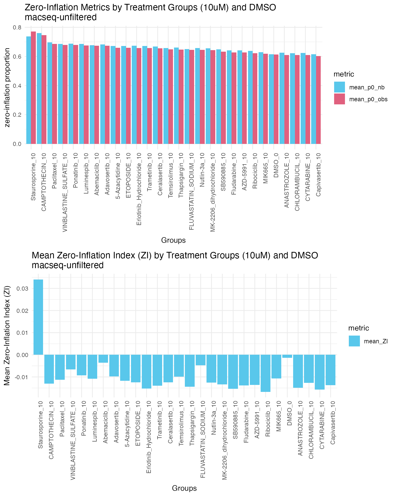
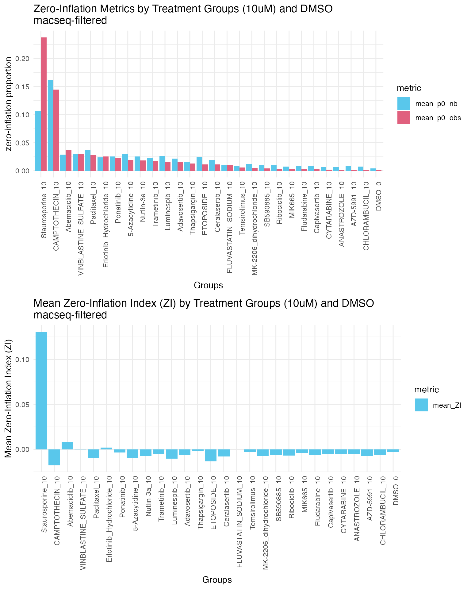

Assessing zero-inflation in your data
Source:vignettes/assessing_zero_inflation.Rmd
assessing_zero_inflation.RmdOverview
This is a quick demonstration of the
check_zeroinflation() function from our
macpie package. This function is a fast diagnostic tool
to help you assess whether your MACseq data exhibits zero-inflation
relative to a negative binomial (NB) model.
We use a lightweight convenience wrapper
subsample_genes() around
seqgendiff::select_counts() to create a
smaller object with a subset of genes for faster computation. This
function is also part of the macpie package.
Under the hood, check_zeroinflation() uses
edgeR to estimate gene-wise dispersions and compute
expected zero probabilities under a NB model. It then compares the
observed and expected zero-inflated indexes for each gene within each
group defined in the metadata.
This function:
estimates gene-wise tagwise dispersions with edgeR (using all selected groups),
builds NB-expected zero probabilities from TMMwsp-scaled means, and
returns per-gene ZI (observed zeros minus NB-expected zeros) and per-group summaries (e.g., % genes with ZI > 0.05). ZI-cutoffs are user-defined.
The output is a list with two elements:
summary_by_group: A summary table showing the number and percentage of genes that are zero-inflated for each group at specified cutoffs.gene_metrics_by_group: A detailed table with gene-wise metrics, including observed and expected zero numbers and proportions, zero-inflation index (ZI), mean count, and dispersion estimates for each gene in each group.
Note: check_zeroinflation() relies on
edgeR to estimate dispersion. The current implementation requires ≥2
groups in the design so that edgeR can stabilize gene-wise dispersions
across groups. If you only have a single group and still want a
design-aware baseline for expected zeros, fit a Gamma–Poisson/NB GLM and
compute the expected zero probabilities from its fitted means and
over-dispersion.
Load data and preprocess before subsampling genes and checking for zero-inflation.
#install.packages("macpie") # or devtools::install_github("PMCC-BioinformaticsCore/macpie")
library(macpie)
library(seqgendiff)
library(ggplot2)
library(cowplot)
# Define project variables
project_name <- "PMMSq033"
project_metadata <- system.file("extdata/PMMSq033_metadata.csv", package = "macpie")
# Load metadata
metadata <- read_metadata(project_metadata)
# Import raw data
project_rawdata <- paste0(dir, "/macpieData/PMMSq033/raw_matrix")
project_name <- "PMMSq033"
raw_counts <- Read10X(data.dir = project_rawdata)
# Create tidySeurat object
mac <- CreateSeuratObject(counts = raw_counts,
project = project_name,
min.cells = 1,
min.features = 1)
#> Warning: Feature names cannot have underscores ('_'), replacing with dashes
#> ('-')
# Join with metadata
mac <- mac %>%
inner_join(metadata, by = c(".cell" = "Barcode"))
# Add unique identifier
mac <- mac %>%
mutate(combined_id = str_c(Compound_ID, Concentration_1, sep = "_")) %>%
mutate(combined_id = gsub(" ", "", .data$combined_id))
mac <- mac %>%
filter(Project == "Current")Subsample genes without filtering
We first subsample genes without filtering to see the zero-inflation results before filtering lowly expressed genes.
This is to randomly select a subset of 1000 genes for a quick check. For a more comprehensive analysis, consider using a larger subset.
# Subsample genes for faster computation
sub_mac_unfiltered <- subsample_genes(mac, ngene = 1000, gselect = "random", seed = 1)
sub_mac_unfiltered %>% nrow()
#> [1] 1000We now look at zero-inflation across high dose treatment groups and DMSO control.
# Check for zero-inflation
high_doses <- grep("_10$", unique(sub_mac_unfiltered$combined_id), value = TRUE)
#add DMSO_0
high_doses <- c(high_doses, "DMSO_0")
zi_results_unfiltered <- check_zeroinflation(sub_mac_unfiltered,
group_by = "combined_id",
samples = high_doses,
batch = 1,
cutoffs = c(0.1, 0.2))View gene-wise metrics for each group
For example, view the first few rows for DMSO_0 group:
zi_results_unfiltered$gene_metrics_by_group %>% filter(group=="DMSO_0") %>% head()
#> group gene mean_count_group dispersion p0_obs
#> ENSG0000028644827 DMSO_0 ENSG00000286448 0.000 1.20e-01 1.000
#> VWA127 DMSO_0 VWA1 0.158 2.11e-02 0.842
#> ENSG0000027210627 DMSO_0 ENSG00000272106 0.526 3.71e-02 0.579
#> ENSG0000028758627 DMSO_0 ENSG00000287586 0.000 9.90e-03 1.000
#> FBXO4427 DMSO_0 FBXO44 5.474 9.77e-05 0.000
#> FHAD127 DMSO_0 FHAD1 0.158 9.90e-03 0.842
#> obs_zeros_num p0_nb expected_zeros_num ZI
#> ENSG0000028644827 19 1.00000 19.000 0.00000
#> VWA127 16 0.85439 16.233 -0.01228
#> ENSG0000027210627 11 0.59545 11.314 -0.01650
#> ENSG0000028758627 19 1.00000 19.000 0.00000
#> FBXO4427 0 0.00547 0.104 -0.00547
#> FHAD127 16 0.85426 16.231 -0.01216And for Staurosporine_10 group:
zi_results_unfiltered$gene_metrics_by_group %>% filter(group=="Staurosporine_10") %>% head()
#> group gene mean_count_group dispersion
#> ENSG00000286448 Staurosporine_10 ENSG00000286448 0 1.20e-01
#> VWA1 Staurosporine_10 VWA1 0 2.11e-02
#> ENSG00000272106 Staurosporine_10 ENSG00000272106 0 3.71e-02
#> ENSG00000287586 Staurosporine_10 ENSG00000287586 0 9.90e-03
#> FBXO44 Staurosporine_10 FBXO44 1 9.77e-05
#> FHAD1 Staurosporine_10 FHAD1 0 9.90e-03
#> p0_obs obs_zeros_num p0_nb expected_zeros_num ZI
#> ENSG00000286448 1.000 3 1.000 3.00 0.0000
#> VWA1 1.000 3 1.000 3.00 0.0000
#> ENSG00000272106 1.000 3 1.000 3.00 0.0000
#> ENSG00000287586 1.000 3 1.000 3.00 0.0000
#> FBXO44 0.333 1 0.414 1.24 -0.0811
#> FHAD1 1.000 3 1.000 3.00 0.0000View summary statistics for each group
zi_results_unfiltered$summary_by_group %>% head(10)
#> group n_genes n_wells mean_p0_obs mean_p0_nb
#> 5-Azacytidine_10 5-Azacytidine_10 1000 3 0.659 0.671
#> Abemaciclib_10 Abemaciclib_10 1000 3 0.674 0.678
#> Adavosertib_10 Adavosertib_10 1000 3 0.673 0.683
#> ANASTROZOLE_10 ANASTROZOLE_10 1000 3 0.611 0.626
#> AZD-5991_10 AZD-5991_10 1000 3 0.627 0.641
#> CAMPTOTHECIN_10 CAMPTOTHECIN_10 1000 3 0.747 0.760
#> Capivasertib_10 Capivasertib_10 1000 3 0.602 0.616
#> Ceralasertib_10 Ceralasertib_10 1000 3 0.657 0.669
#> CHLORAMBUCIL_10 CHLORAMBUCIL_10 1000 3 0.610 0.622
#> CYTARABINE_10 CYTARABINE_10 1000 3 0.609 0.625
#> mean_ZI observed_zeros_num expected_zeros_num pct_ZI_gt_0.1
#> 5-Azacytidine_10 -0.01180 1978 2013 0.036
#> Abemaciclib_10 -0.00357 2023 2034 0.072
#> Adavosertib_10 -0.00970 2020 2049 0.043
#> ANASTROZOLE_10 -0.01495 1832 1877 0.029
#> AZD-5991_10 -0.01367 1882 1923 0.027
#> CAMPTOTHECIN_10 -0.01304 2241 2280 0.046
#> Capivasertib_10 -0.01376 1806 1847 0.039
#> Ceralasertib_10 -0.01241 1970 2007 0.038
#> CHLORAMBUCIL_10 -0.01273 1829 1867 0.036
#> CYTARABINE_10 -0.01566 1827 1874 0.029
#> pct_ZI_gt_0.2
#> 5-Azacytidine_10 0.015
#> Abemaciclib_10 0.034
#> Adavosertib_10 0.013
#> ANASTROZOLE_10 0.007
#> AZD-5991_10 0.007
#> CAMPTOTHECIN_10 0.015
#> Capivasertib_10 0.016
#> Ceralasertib_10 0.012
#> CHLORAMBUCIL_10 0.012
#> CYTARABINE_10 0.009From the summary table, we can see the summary statistics for each group, including the number and percentage of genes that are zero-inflated at the specified cutoffs.
Each of the columns in the summary table are defined as follows:
group: The treatment group
n_genes: Total number of genes analyzed in the group
n_wells: Total number of wells/samples in the group
mean_p0_obs: mean observed zero proportion across genes in the group
mean_p0_nb: mean expected zero proportion under the NB model across genes in the group
mean_ZI: mean zero-inflation index (ZI = p0_obs - p0_nb for each gene) across genes in the group
observed_zeros_num: Number of data points with observed zeros (it shouldn’t be more than n_genes*n_wells for each group)
expected_zeros_num: Number of data points with expected zeros under the NB model (same here, it shouldn’t be more than n_genes*n_wells for each group)
pct_ZI_gt_0.1: Percentage of genes with ZI greater than 0.1
pct_ZI_gt_0.2: Percentage of genes with ZI greater than 0.2
Visualisation of zero-inflation metrics for high dose treatment groups and DMSO control.
high_doses_zi_results_unfiltered <- zi_results_unfiltered$summary_by_group %>% filter(grepl("_10$", group))
#concatenate with DMSO
high_doses_zi_results_unfiltered <- rbind(high_doses_zi_results_unfiltered,
zi_results_unfiltered$summary_by_group %>% filter(group=="DMSO_0"))
long_zi_results_unfiltered <- high_doses_zi_results_unfiltered %>% select(group, mean_p0_obs, mean_p0_nb, mean_ZI) %>%
pivot_longer(cols = c(mean_p0_obs, mean_p0_nb, mean_ZI),
names_to = "metric",
values_to = "value")
# rank groups by mean_p0_obs
long_zi_results_unfiltered$group <- factor(long_zi_results_unfiltered$group,
levels = high_doses_zi_results_unfiltered$group[order(-high_doses_zi_results_unfiltered$mean_p0_obs)])
#only show mean_p0_obs and mean_p0_nb
long_zi_results_unfiltered_prop <- long_zi_results_unfiltered %>% filter(metric %in% c("mean_p0_obs", "mean_p0_nb"))
p1 <- ggplot(long_zi_results_unfiltered_prop, aes(x = group, y = value, fill = metric)) +
geom_bar(stat = "identity", position = "dodge") +
labs(title = "Zero-Inflation Metrics by Treatment Groups (10uM) and DMSO \nmacseq-unfiltered",
x = "Groups",
y = "zero-inflation proportion") +
theme_minimal() +
theme(axis.text.x = element_text(angle = 90, hjust = 1)) +
scale_fill_manual(values = macpie_colours$discrete[1:3])
# show ZI separately
p2 <- ggplot(long_zi_results_unfiltered %>% filter(metric=="mean_ZI"), aes(x = group, y = value, fill = metric)) +
geom_bar(stat = "identity", position = "dodge") +
labs(title = "Mean Zero-Inflation Index (ZI) by Treatment Groups (10uM) and DMSO \nmacseq-unfiltered",
x = "Groups",
y = "Mean Zero-Inflation Index (ZI)") +
theme_minimal() +
theme(axis.text.x = element_text(angle = 90, hjust = 1)) +
scale_fill_manual(values = macpie_colours$discrete[1])
plot_grid(p1, p2, ncol = 1)
Ranking of groups by mean observed zero proportion (mean_p0_obs) shows that Staurosporine_10 has the highest observed zero proportion, followed by Camptothecin_10, and paclitaxel_10. We can see staurosporine_10 group has the highest mean ZI value and highest proportion of zeros among all treatment groups, indicating significant zero-inflation in this group. Other treatment groups show small or even negative mean ZI values, suggesting no significant zero-inflation. As staurosporine is a cell death control, which it is expected to see zero-inflated data in this group.
DMSO control group with ~60% of zeros and small mean ZI value, indicating no significant zero-inflation in the control group.
Subsample genes after filtering lowly expressed genes
Filter genes with very low counts across all samples. This step is important because genes with extremely low expression can lead to unreliable estimates of dispersion and expected zero probabilities, which can skew the zero-inflation assessment.
Here we filter genes that have at least 10 counts in at least 2
samples within each group defined by combined_id.
# Filter by read count per sample group
mac <- filter_genes_by_expression(mac,
group_by = "combined_id",
min_counts = 10,
min_samples = 2)Subsample genes for faster computation
This is to randomly select a subset of 1000 genes for a quick check. For a more comprehensive analysis, consider using a larger subset.
# Subsample genes for faster computation
sub_mac <- subsample_genes(mac, ngene = 1000, gselect = "random", seed = 1)
sub_mac %>% nrow()
#> [1] 1000
# Check for zero-inflation
all_conditions <- unique(sub_mac$combined_id)
zi_results <- check_zeroinflation(sub_mac,
group_by = "combined_id",
samples = all_conditions,
batch = 1,
cutoffs = c(0.1, 0.2))View gene-wise metrics for each group
zi_results$gene_metrics_by_group %>% filter(group=="Luminespib_10") %>% head()
#> group gene mean_count_group dispersion p0_obs
#> MTND1P2364 Luminespib_10 MTND1P23 8.67 9.77e-05 0
#> MTATP6P164 Luminespib_10 MTATP6P1 5.67 1.64e-02 0
#> ISG1564 Luminespib_10 ISG15 7.00 9.77e-05 0
#> PUSL164 Luminespib_10 PUSL1 8.00 9.77e-05 0
#> DVL164 Luminespib_10 DVL1 5.33 9.77e-05 0
#> MRPL2064 Luminespib_10 MRPL20 8.67 4.96e-02 0
#> obs_zeros_num p0_nb expected_zeros_num ZI
#> MTND1P2364 0 0.000301 0.000904 -0.000301
#> MTATP6P164 0 0.005591 0.016773 -0.005591
#> ISG1564 0 0.001346 0.004038 -0.001346
#> PUSL164 0 0.000547 0.001641 -0.000547
#> DVL164 0 0.006143 0.018428 -0.006143
#> MRPL2064 0 0.001014 0.003043 -0.001014
zi_results$summary_by_group %>% head(10)
#> group n_genes n_wells mean_p0_obs mean_p0_nb
#> 5-Azacytidine_0.1 5-Azacytidine_0.1 1000 3 0.002667 0.01072
#> 5-Azacytidine_1 5-Azacytidine_1 1000 3 0.004000 0.00958
#> 5-Azacytidine_10 5-Azacytidine_10 1000 3 0.019667 0.02903
#> Abemaciclib_0.1 Abemaciclib_0.1 1000 3 0.001667 0.00614
#> Abemaciclib_1 Abemaciclib_1 1000 3 0.005333 0.01020
#> Abemaciclib_10 Abemaciclib_10 1000 3 0.037333 0.02891
#> Adavosertib_0.1 Adavosertib_0.1 1000 3 0.002333 0.00660
#> Adavosertib_1 Adavosertib_1 1000 3 0.004333 0.00784
#> Adavosertib_10 Adavosertib_10 1000 3 0.015333 0.02170
#> ANASTROZOLE_0.1 ANASTROZOLE_0.1 1000 3 0.000333 0.00875
#> mean_ZI observed_zeros_num expected_zeros_num pct_ZI_gt_0.1
#> 5-Azacytidine_0.1 -0.00805 8 32.2 0.007
#> 5-Azacytidine_1 -0.00558 12 28.7 0.007
#> 5-Azacytidine_10 -0.00936 59 87.1 0.030
#> Abemaciclib_0.1 -0.00447 5 18.4 0.005
#> Abemaciclib_1 -0.00487 16 30.6 0.013
#> Abemaciclib_10 0.00842 112 86.7 0.098
#> Adavosertib_0.1 -0.00427 7 19.8 0.007
#> Adavosertib_1 -0.00350 13 23.5 0.012
#> Adavosertib_10 -0.00637 46 65.1 0.037
#> ANASTROZOLE_0.1 -0.00842 1 26.2 0.001
#> pct_ZI_gt_0.2
#> 5-Azacytidine_0.1 0.007
#> 5-Azacytidine_1 0.004
#> 5-Azacytidine_10 0.018
#> Abemaciclib_0.1 0.005
#> Abemaciclib_1 0.012
#> Abemaciclib_10 0.084
#> Adavosertib_0.1 0.006
#> Adavosertib_1 0.010
#> Adavosertib_10 0.025
#> ANASTROZOLE_0.1 0.001
high_doses_zi_results <- zi_results$summary_by_group %>% filter(grepl("_10$", group))
#concatenate with DMSO
high_doses_zi_results <- rbind(high_doses_zi_results,
zi_results$summary_by_group %>% filter(group=="DMSO_0"))
long_zi_results <- high_doses_zi_results %>% select(group, mean_p0_obs, mean_p0_nb, mean_ZI) %>%
pivot_longer(cols = c(mean_p0_obs, mean_p0_nb, mean_ZI),
names_to = "metric",
values_to = "value")
# rank groups by mean_p0_obs
long_zi_results$group <- factor(long_zi_results$group,
levels = high_doses_zi_results$group[order(-high_doses_zi_results$mean_p0_obs)])
#only show mean_p0_obs and mean_p0_nb
long_zi_results_prop <- long_zi_results %>% filter(metric %in% c("mean_p0_obs", "mean_p0_nb"))
p1 <- ggplot(long_zi_results_prop, aes(x = group, y = value, fill = metric)) +
geom_bar(stat = "identity", position = "dodge") +
labs(title = "Zero-Inflation Metrics by Treatment Groups (10uM) and DMSO \nmacseq-filtered",
x = "Groups",
y = "zero-inflation proportion") +
theme_minimal() +
theme(axis.text.x = element_text(angle = 90, hjust = 1)) +
scale_fill_manual(values = macpie_colours$discrete[1:3])
# show ZI separately
p2 <- ggplot(long_zi_results %>% filter(metric=="mean_ZI"), aes(x = group, y = value, fill = metric)) +
geom_bar(stat = "identity", position = "dodge") +
labs(title = "Mean Zero-Inflation Index (ZI) by Treatment Groups (10uM) and DMSO \nmacseq-filtered",
x = "Groups",
y = "Mean Zero-Inflation Index (ZI)") +
theme_minimal() +
theme(axis.text.x = element_text(angle = 90, hjust = 1)) +
scale_fill_manual(values = macpie_colours$discrete[1])
plot_grid(p1, p2, ncol = 1)
After filtering lowly expressed genes, we observe proportions of both expected and observed zeros decrease across all treatment groups compared to the unfiltered data. These results suggest that lowly expressed genes contribute significantly to the overall zero counts or sparsity in the data.
DMSO control group has the lowest observed and expected zero proportions among all groups, and staurosporine_10 has the highest observed and expected zero proportions. These findings are expected as these are vehicle and positive controls.